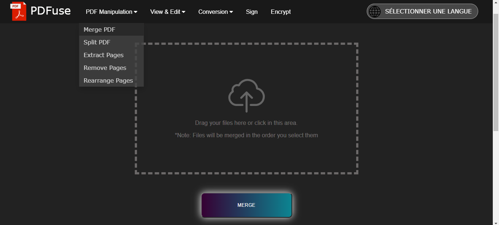
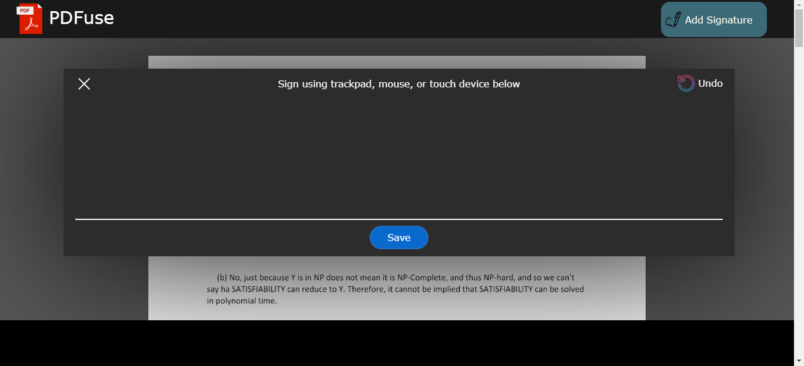

Portfolio
PDFuse
- Designed and built a flask application that allows a user to manipulate, view, and edit PDF files
- Users are able to merge, extract, delete, parse, convert, sign, encrypt, and edit singular or multiple PDF files (among other features)
- Motivation: Problem sets needed to be scanned, but also converted into PDF format. Many times this would involve merging the files thereafter. Existing sites (i.e. smallpdf, pdf.io) are either comprehensive but have a limited trial period, or are free but limited in features. I tried to fuse the best of both when coding PDFuse.
- Tools: HTML, CSS, Flask, PDF.js, jQuery, Javascript
-  
Advanced Persistent Threat IDS
- The codebase is based on the MORSE APT detector (implemented in Java)
- Contributions include tag initialization, decay, propagation, and judge policies to mitigate the dependency explosion problem
- Original framework yields 708 alarms, whereas the modified version yields 267, thus displaying roughly a 62% decrease while correctly detecting malicious behavior
Final Output Scenario Graph
Huron Consulting Group (August 2014-June 2015; August 2015-June 2016)
*Internship was 5 times a month each month during above time period
- Communicate problems and solutions to other team members and non-technical audiences to help resolve software-related issues with client devices
- Utilize MS Office suite tools (Word, Excel, Outlook, PowerPoint) and adobe acrobat to complete data entry tasks related to endpoint hardware management
- Refurbish and repair various Lenovo think pad laptop models, and ensure compliance of endpoint equipment standards as well as delivery according to IT department standards
- Install MAC OS X and Windows operating systems to new and refurbished company laptops and desktops
- Fulfill equipment and hardware movements and replacements across the company for endpoint devices and related equipment as required
Morgan Stanley (August 2013-June 2014)
*Internship was 5 times a month each month during above time period
- Provide technical support to employees across the company as well as other projects as necessary
- Utilize basic and advanced troubleshooting techniques to solve various software-related issues
- Ensure organization of inventory for quick retrieval of essential tools and endpoint devices needed for resolution of client issues and keep track of count to pinpoint repair needs and verify accurate stock
- Troubleshoot and resolve mobile device issues (iPhone and Blackberry models)